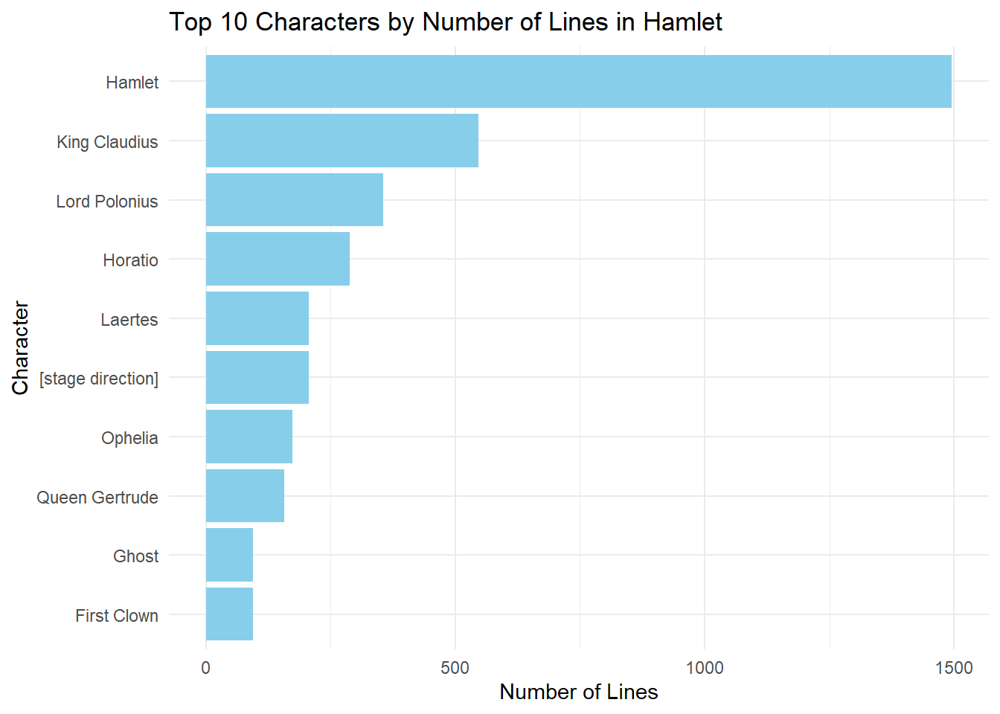

Text analysis of Shakespeare plays using string functions and regular expressions
Author
Eli Della Bitta
Published
October 8, 2025
This analysis will look at dialogue from Shakespeare’s plays to find patterns in the text. I will use string functions and regular expressions to identify questions, exclamations, character speech patterns, and emotional language. The dataset contains lines from multiple Shakespeare plays including Romeo and Juliet, Hamlet, and Macbeth.
# A tibble: 6 × 5
act scene character dialogue line_number
<chr> <chr> <chr> <chr> <dbl>
1 Act I Scene I [stage direction] FRANCISCO at his post. Enter to h… NA
2 Act I Scene I Bernardo Who's there? 1
3 Act I Scene I Francisco Nay, answer me: stand, and unfold… 2
4 Act I Scene I Bernardo Long live the king! 3
5 Act I Scene I Francisco Bernardo? 4
6 Act I Scene I Bernardo He. 5
Insight!: Most lines in Hamlet are statements, with very few questions and exclamations. This shows the play contains more direct dialogue than interrogative or emotional outbursts. Questions make up only a small portion of the total dialogue, showing that characters often speak in statements rather than inquiries.
Code
character_lines <- shakespeare |>group_by(character) |>summarise(total_lines =n(),avg_line_length =mean(line_length, na.rm =TRUE),question_rate =mean(is_question, na.rm =TRUE) *100 ) |>filter(total_lines >=20) |>arrange(desc(total_lines)) |>head(10)ggplot(character_lines, aes(x =reorder(character, total_lines), y = total_lines)) +geom_col(fill ="skyblue") +coord_flip() +labs(title ="Top 10 Characters by Number of Lines in Hamlet",x ="Character",y ="Number of Lines") +theme_minimal()

Insight!: Hamlet has significantly more lines than any other character, which makes sense as the protagonist. The distribution shows a major drop off after the main character, with supporting characters like Horatio and Claudius having substantially fewer lines. This reflects the play’s focus on Hamlet’s internal struggles and thoughts.
Insight!: The table shows how often different emotional themes appear in the dialogue. Death appears most frequently, which aligns with Hamlet’s dark themes and tragic ending. Love appears less than death, reflecting the play’s focus on mortality and revenge over romance. Fear and hate have some presence, contributing to the play’s tense atmosphere.
Code
thee_phrases <- shakespeare |>filter(str_detect(dialogue, "\\w+\\s+thee")) |>mutate(before_thee =str_extract(dialogue, "\\w+(?=\\s+thee)") ) |>filter(!is.na(before_thee)) |>count(before_thee, sort =TRUE) |>head(10)knitr::kable(thee_phrases, caption ="Most Common Words Before 'thee' in Hamlet",col.names =c("Word Before 'thee'", "Frequency"))
Most Common Words Before ‘thee’ in Hamlet
Word Before ‘thee’
Frequency
to
4
with
3
Get
2
Remember
2
charge
2
do
2
follow
2
get
2
give
2
in
2
Insight!: This analysis shows common phrases used in Shakespearean English. Words like “with,” “to,” and “for” appear a lot before “thee,” showing typical sentence structures of the time period. This pattern helps us understand how characters addressed each other in formal Early Modern English.